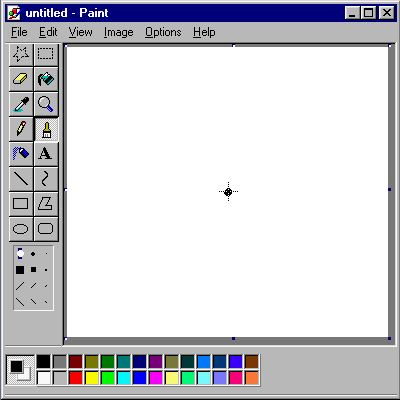
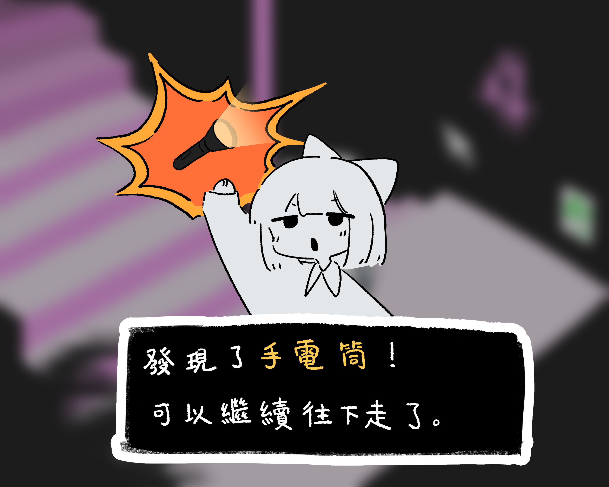
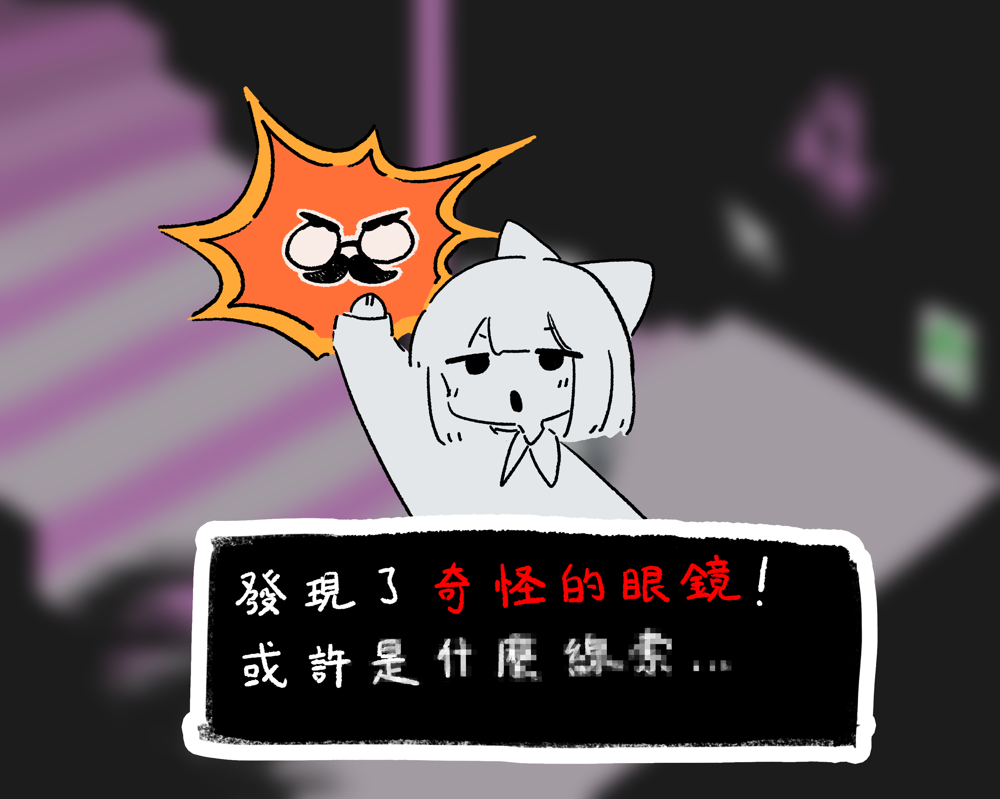
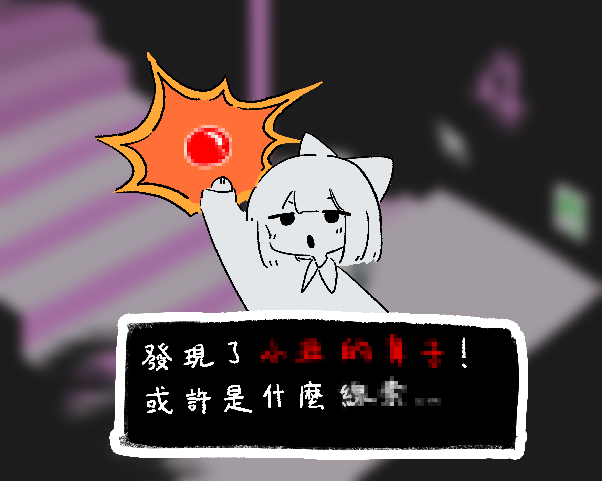
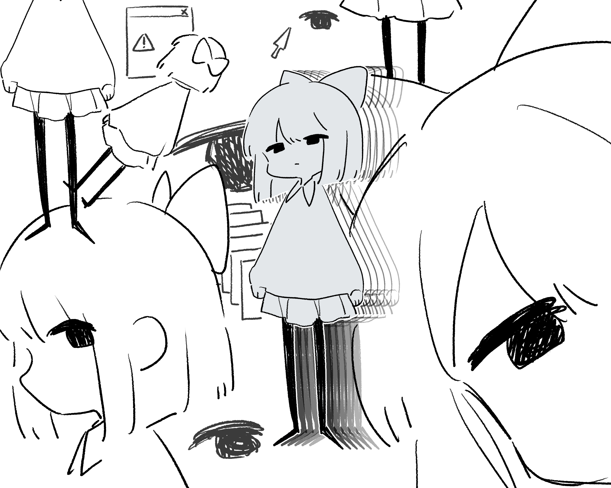
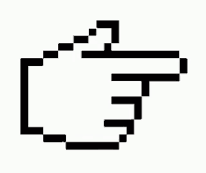

遊戲內容

設計

  
解謎
在某些時刻會得到道具，會有發光特效提示，玩家需要依據情況合理使用


手電筒
照亮陰暗的角落、發現不同的道路
在追逐戰的結尾，主角被逼到絕路，將手電筒照向即將撲過來的黑暗將其驅散，意外發現了離開這個輪迴的出口......

奇怪的眼鏡
特殊鏡片映出了意外的發現
隱藏的角落成為暫時的避風港，但是沒有手電筒，主角無法對抗黑暗，這裡也沒辦法永遠藏下去，直到發現了什麼真相......?

小丑鼻子
似乎進入了什麼特別的精神境界
經歷了這麼久的輪迴，主角想起這一切都只是遊戲，在主角崩潰的內心與空虛的世界中進行平淡無奇的對話......
